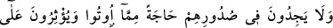
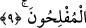

9. Daha önceden Medine’yi yurt edinmiş ve gönüllerine îmânı yerleştirmiş olan
kimseler, kendilerine göç edip gelenleri severler ve onlara verilenlerden dolayı
içlerinde bir rahatsızlık hissetmezler. Kendileri zaruret içinde bulunsalar bile onları
kendilerine tercih ederler. Kim nefsinin cimriliğinden korunursa, işte onlar
kurtuluşa erenlerdir.
“Daha önce Medine’yi yurt edinmiş ve gönüllerine îmânı yerleştirmiş olan
kimseler…” Âyet-i kerime, ensarı güzel hasletlerle övmek için gelen bağımsız bir
ifâdedir. Bu güzel hasletlerden bir kısmı; Mekke’den Medine’ye hicret eden muhâcirleri
sevmeleri ve fey’in yalnız muhâcirlere verilmesine tam olarak ve en güzel şekliyle râzı
olmalarıdır.
Ensar; Evs ve Hazrecoğullarıdır. Bu iki ismin sâhibi kişiler, Hârise’nin iki oğludurlar.
Hârise, Sa’lebe’nin o da Amr’ın o da Âmir’in oğlu Hârise oğlu Hârise oğlu İmrü’l-
Kays oğlu Sa’lebe oğlu Mazin b. el-Ezd b. el-Gavs b. Nit b. Mâlik b. Zeyd b. Kühlan b.
Sebe b. Yeşcüb b. Ya’rib b. Kahtan b. Amir b. Şalih Ebû Hay’dir. O da arapların
aslıdır. Ensardan bir kısmına Gassân denir. Gassân, şeddâd ölçüsünde bir kelimedir.
Gassân, aslında Cühfe denilen yere yakın bir su adıdır. Ezdoğullarından bir topluluk
orada konaklayıp o sudan içtikleri için onlara Gassân adı verilmiş ve bu suya nisbet
edilmişlerdir. Bevâ kelimesinin aslı; yerde parçaların birbirine eşit olmasıdır.
Parçaların birinin diğerine uymaması anlamındaki kelimenin aksinedir. Evve’tu lehû
mekânen sözü, “yeri onun için düzelttim” demektir.
Rivâyet edildiğine göre Peygamberimiz (s.a.) küçük abdest bozmak için, sürekli
kalacağı bir yerde yerleşir gibi yerleşirdi.[45]
Tebevvü’l-menzil; mesken edinmek, sürekli kalmak üzere yerleşmek demektir. İçinde
yerleşilen yer de ev ve mekânlar cinsinden bir yer olması gerekir.
Âyet-i kerimede geçen ed-Dâr/yurt kelimesinden maksad Medine’dir. İslâm’dan
önceki adı Yesrib, İslâm döneminde ise Tayyibe, Tâbe (çok güzel, çok temiz) adı
verilir.
İman, bu kabilden değildir. “Yurt edinmiş ve gönüllerine îmânı yerleştirmiş
olanlar...” ifâdesinin anlamı: “Ensar, Medineyi ve îmânı yurt edinip her ikisinde de en
sağlam bir şekilde yerleştiler” demektir. Burada hâl mekân yerine dönüştürülmüştür.
Tebevvü kelimesi lüzum mânâsınadır, denilmiştir. Bu ifâdenin; Onlar, Medine’yi yurt
edindiler ve îmanda tam bir ihlâs ve samîmiyet gösterdiler veya îmânı kabullendiler
veya îmânı tercih ettiler, anlamlarına geldiği de söylenmiştir.